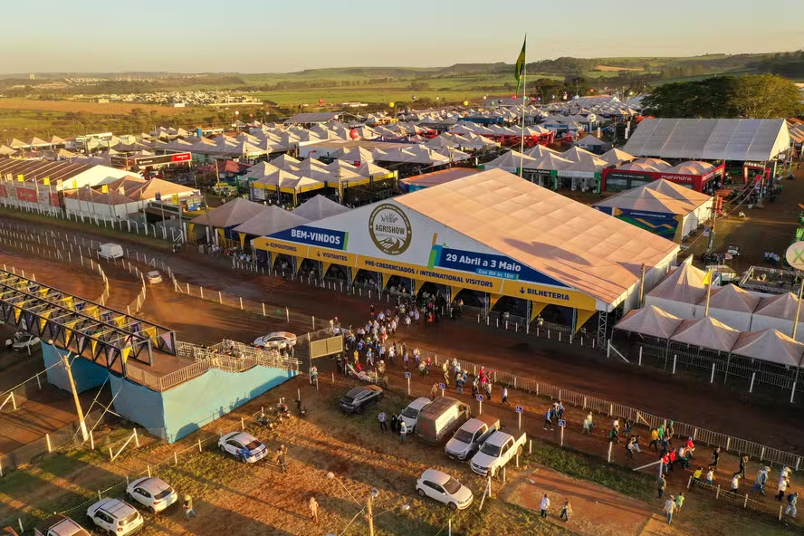
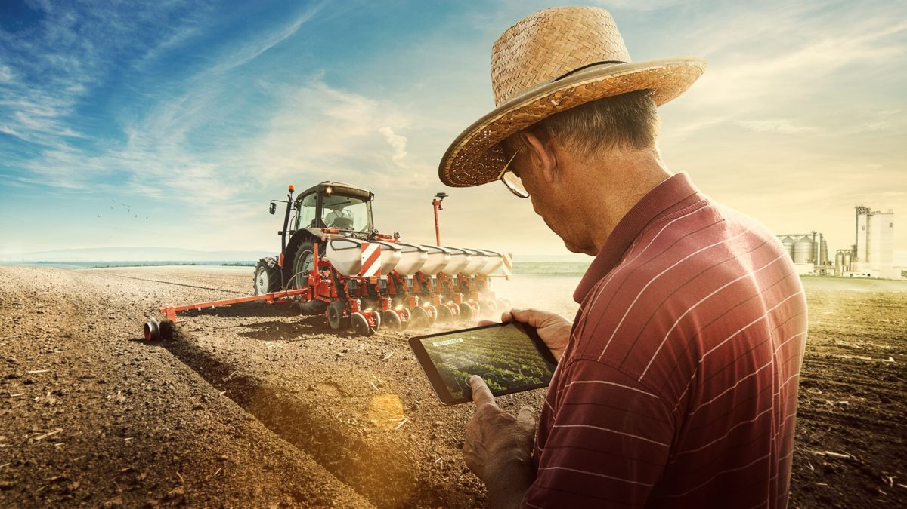

Bem-vindo!
Este espaço celebra o encontro entre a vida rural e urbana por meio da tecnologia, cultura e inovação.
Festival AgroUrbano
Um evento que reúne produtores rurais, artistas urbanos e comunidades locais para celebrar a integração entre campo e cidade.
Inovação no Campo
Conheça o uso de drones, inteligência artificial e tecnologias sustentáveis que estão transformando a agricultura.